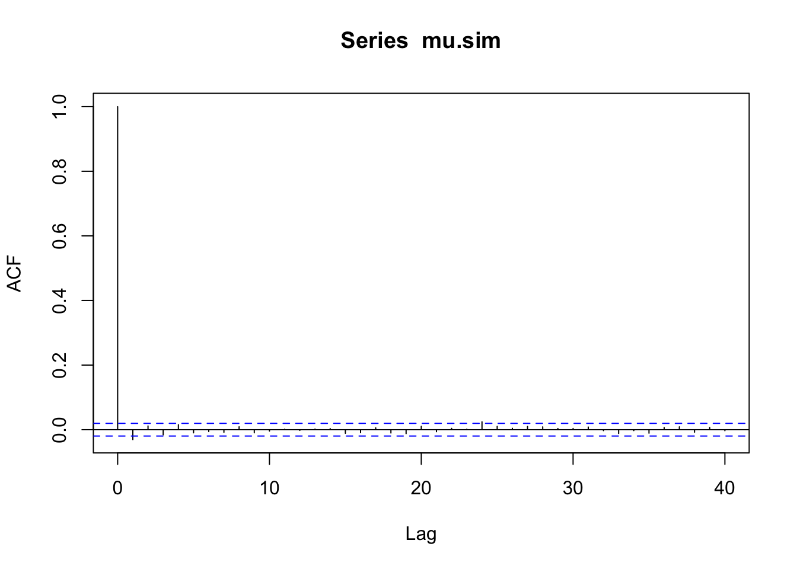
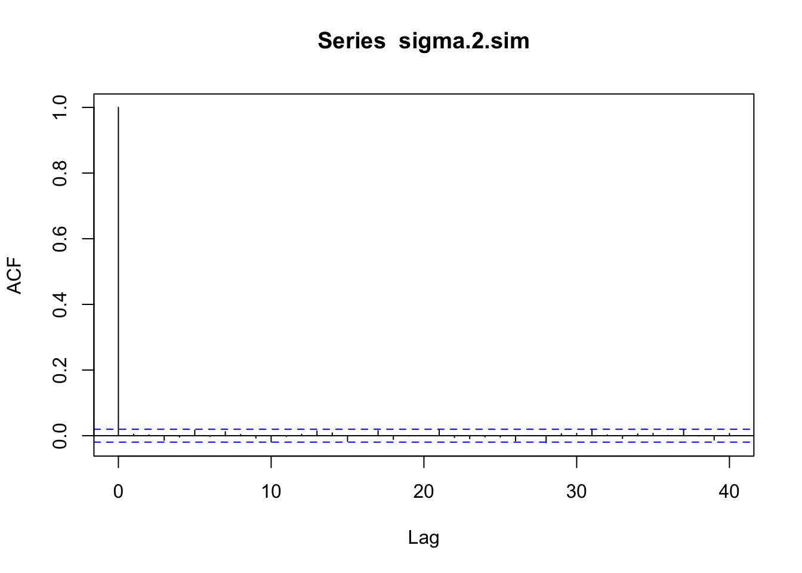
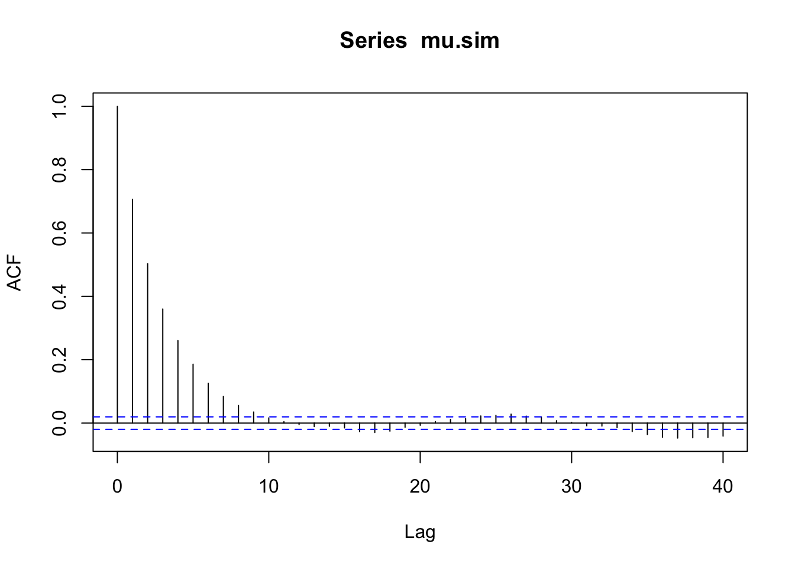
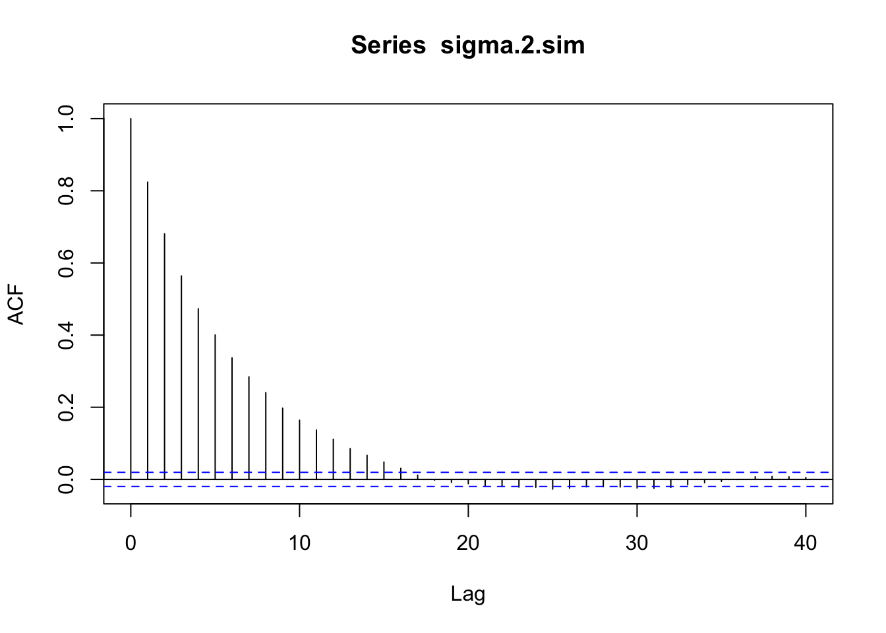
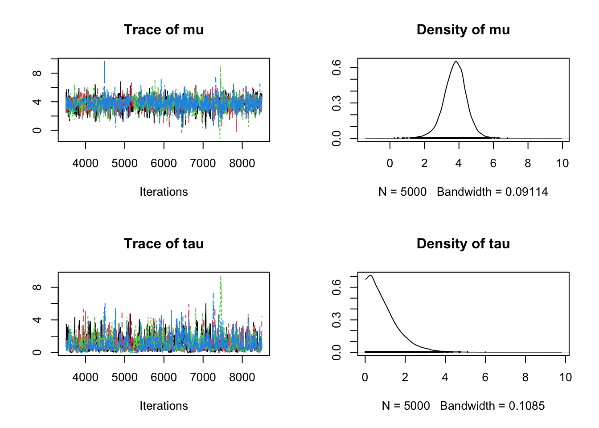
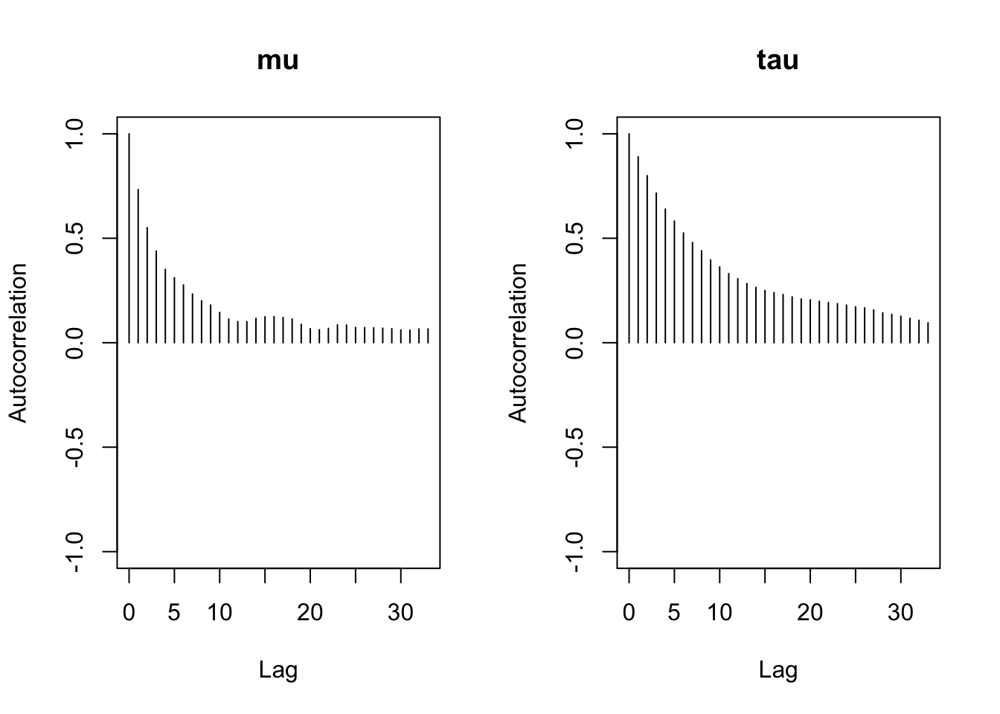
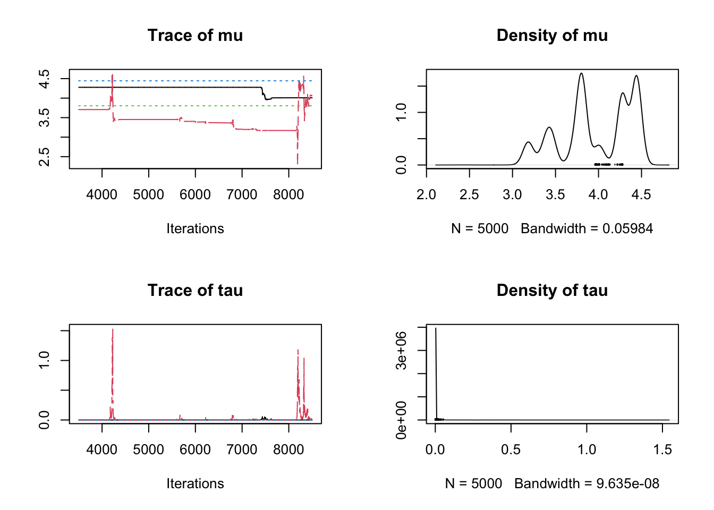
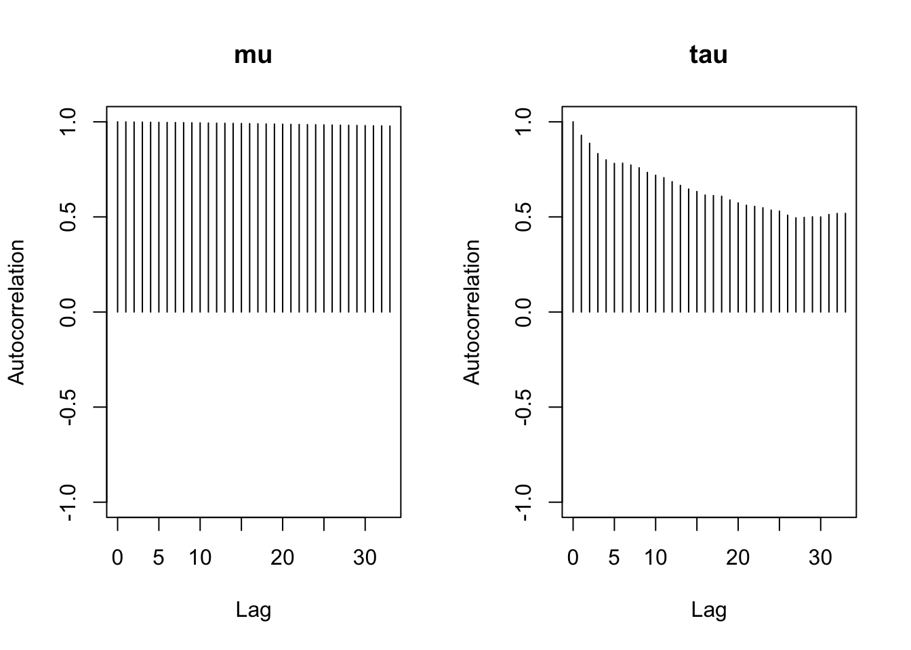

source("./Flint Gibbs.r", echo = FALSE)
acf(mu.sim)
acf(sigma.2.sim)
source("./Flint Gibbs.r", echo = FALSE)
acf(mu.sim)
acf(sigma.2.sim)
rho that gives an average acceptance rate of about \(0.35\)rho = 0.0308 the acceptance rate is around \(0.35\)rho <- 0.0308
source("./Flint Metropolis.r", echo = FALSE)
mean(accept.prob)[1] 0.3544809acf(mu.sim)
acf(sigma.2.sim)
polls20161.bug for the following questionsd <- read.table("./Polls 2016.txt", header=TRUE)
# variable init
d$sigma <- d$ME / 2
# JAGS
library(rjags)Loading required package: codaLinked to JAGS 4.3.2Loaded modules: basemod,bugsinitial.vals <- list(
list(mu=100, tau=0.01),
list(mu=100, tau=100),
list(mu=-100, tau=0.01),
list(mu=-100, tau=100)
)
ml <- jags.model(
"./Polls 2016.bug",
d,
initial.vals,
n.chains=4,
n.adapt=1000
)Warning in jags.model("./Polls 2016.bug", d, initial.vals, n.chains = 4, :
Unused variable "poll" in dataWarning in jags.model("./Polls 2016.bug", d, initial.vals, n.chains = 4, :
Unused variable "ME" in dataCompiling model graph
Resolving undeclared variables
Allocating nodes
Graph information:
Observed stochastic nodes: 7
Unobserved stochastic nodes: 9
Total graph size: 42
Initializing modelupdate(ml, 2500) # burn-in
x <- coda.samples(ml, c("mu", "tau"), n.iter=5000)mu and tau, there is no convergence problem.plot(x, smooth=FALSE)
gelman.diag(x, autoburnin=FALSE)Potential scale reduction factors:
Point est. Upper C.I.
mu 1.00 1.00
tau 1.01 1.02
Multivariate psrf
1.01# extract the first chain from x
first <- x[[1]]
autocorr.plot(first)
effectiveSize(x) mu tau
2082.2876 855.0439 tau on the log scalemodel {
for (j in 1:length(y)) {
y[j] ~ dnorm(theta[j], 1/sigma[j]^2)
theta[j] ~ dnorm(mu, 1/tau^2)
}
mu ~ dunif(-1000,1000)
logtau ~ dunif(-100,100)
tau <- exp(logtau)
}initial.vals <- list(
list(mu=100, logtau=log(100)),
list(mu=100, logtau=log(0.01)),
list(mu=-100, logtau=log(100)),
list(mu=-100, logtau=log(0.01))
)
ml <- jags.model(
"./Polls 2016_2.bug",
d,
initial.vals,
n.chains=4,
n.adapt=1000
)Warning in jags.model("./Polls 2016_2.bug", d, initial.vals, n.chains = 4, :
Unused variable "poll" in dataWarning in jags.model("./Polls 2016_2.bug", d, initial.vals, n.chains = 4, :
Unused variable "ME" in dataCompiling model graph
Resolving undeclared variables
Allocating nodes
Graph information:
Observed stochastic nodes: 7
Unobserved stochastic nodes: 9
Total graph size: 44
Initializing modelupdate(ml, 2500) # burn-in
x <- coda.samples(ml, c("mu", "tau"), n.iter=5000)mu and tau, there is a convergence problem as the mixing of both variables are poor.
mu: The chains remain in separate regions.tau: Most values are close to 0, with occasional spikes.plot(x, smooth=FALSE)
gelman.diag(x, autoburnin=FALSE)Potential scale reduction factors:
Point est. Upper C.I.
mu 4.59 16.67
tau 1.31 2.09
Multivariate psrf
4.31mu and tau is rather slow.autocorr.plot(x[[1]])